Post-Training and Deploying Open Source Reasoning Models in Foundry
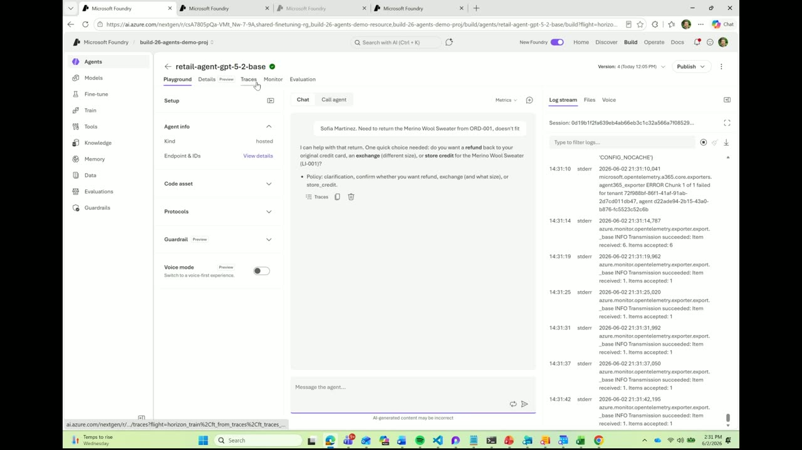
Chapters
Official description
Go beyond prompt engineering to build custom reasoning models using reinforcement learning in Microsoft Foundry. We'll walk through how to train and fine-tune a model to improve reasoning quality, deploy it into Foundry, and integrate it into an agent workflow. Designed for developers comfortable with code, this session focuses on real implementation details, covering training loops, evaluation, and deployment patterns that directly impact agent performance. Seating for this session is first-come, first-served. Add it to your schedule to plan your day and arrive early to secure a spot.
Summary
Overview
A demo-driven walkthrough of using Microsoft Foundry to post-train smaller open source reasoning models as a cost-efficient alternative to frontier models in production agents. The session emphasizes defining evaluations upfront, capturing production traces as training data, and applying supervised and reinforcement fine-tuning to improve tool-calling accuracy and token efficiency. Technical difficulties prevented the live demo, so portions were presented via slides.
Key announcements
- Foundry now supports customizing agents with any open source framework and model (00:03:04
 m05s
m05s m10s
m10s p05s
p05s p10s) — Beyond creating and deploying agents, Foundry enables fine-tuning open source models to reach a production-ready quality bar.
p10s) — Beyond creating and deploying agents, Foundry enables fine-tuning open source models to reach a production-ready quality bar. - Automatic trace capture and conversion to training datasets (00:05:38m05sm10s
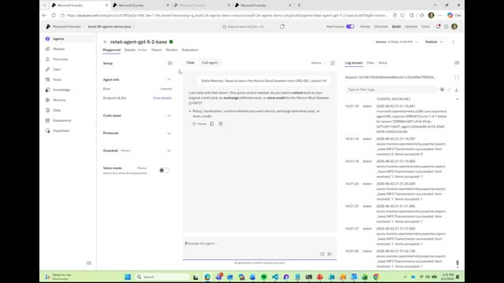
p05s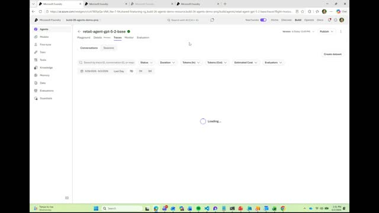
p10s) — Every session and interaction is captured with observability into cost and reproducibility, and these production traces can be converted directly into datasets for subsequent reinforcement learning. - Native integration with Ray dashboards and a rollout browser (00:09:47
 m05s
m05s m10s
m10s p05s
p05s p10s) — Fine-tuning jobs integrate with Ray clusters managed in Foundry through an AAD-authenticated endpoint, allowing monitoring of CPU/GPU nodes, jobs, and RFT rollouts.
p10s) — Fine-tuning jobs integrate with Ray clusters managed in Foundry through an AAD-authenticated endpoint, allowing monitoring of CPU/GPU nodes, jobs, and RFT rollouts.
{kind=link}
{kind=link}
{kind=link}
{kind=link}
Topics covered
- Cost and token-consumption differences between agentic and chat scenarios, and why scaling agents increases cost and latency.
- Eval-first development as "test-driven development for the age of agents," defining quality bars independent of the underlying model.
- Tool-calling order, policy adherence, and call rate as factors affecting agent quality and latency.
- Post-training as an umbrella term spanning data preparation (custom data, agent traces, distillation from larger models, synthetic data), with data prep consuming up to 80% of effort.
- The distinction between supervised fine-tuning (SFT), which teaches a model to imitate provided data, and reinforcement fine-tuning (RFT), which rewards verifiable steps on a zero-to-one scale.
- A distillation → SFT → RFT workflow using GRPO and custom code.
- Inspecting RFT trajectories to reward or penalize specific tool calls per sample.
Notable quotes
"By defining your evals, you can specify what is good, what your policies are, how the agent should behave, which tools should be called when, and all of this can be done in a consistent and repeatable way regardless of which models you're using in the agent." — Chris Lauren
"RFT is the one that's saying here are the verifiable steps. As long as you make sure that every single one of the steps that you follow and you get the task done... that's what you reward." — Vijay Aski
"This model can operate at [one-tenth] the cost of GPT 5.2. It's a small, very efficient model." — Chris Lauren
Products and tools mentioned
- Microsoft Foundry
- GPT-5.2
- Qwen3-14B [inferred]
- Ray (dashboards and clusters)
- GRPO
- Microsoft Entra ID / AAD authentication
Speakers featured
- Chris Lauren
- Vijay Aski
Frames
{kind=link}
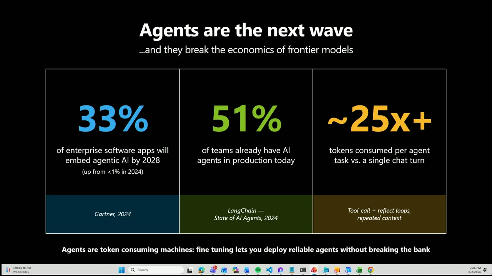
{kind=link}
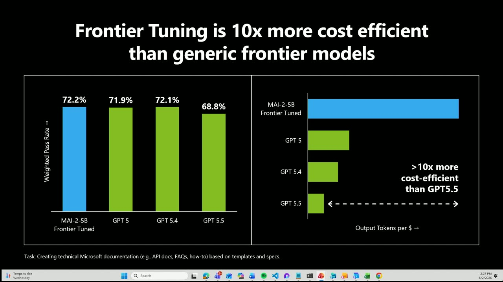
{kind=link}
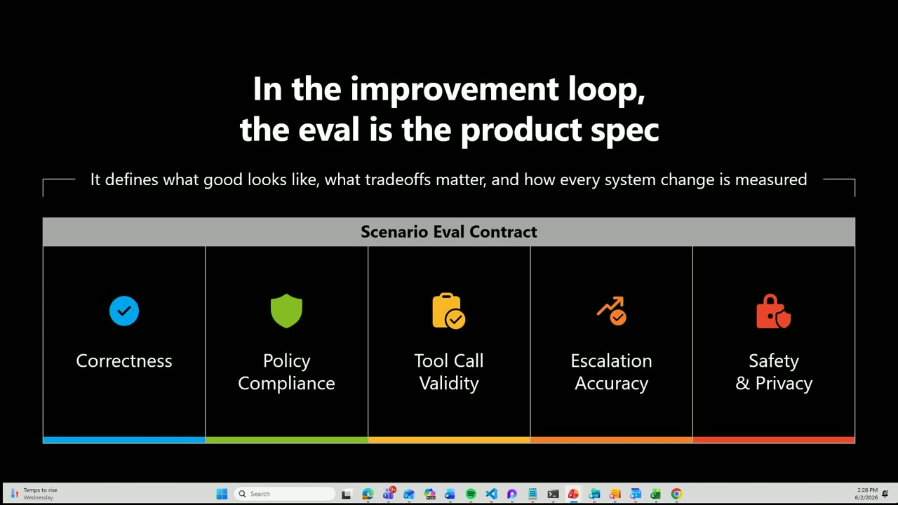
{kind=link}
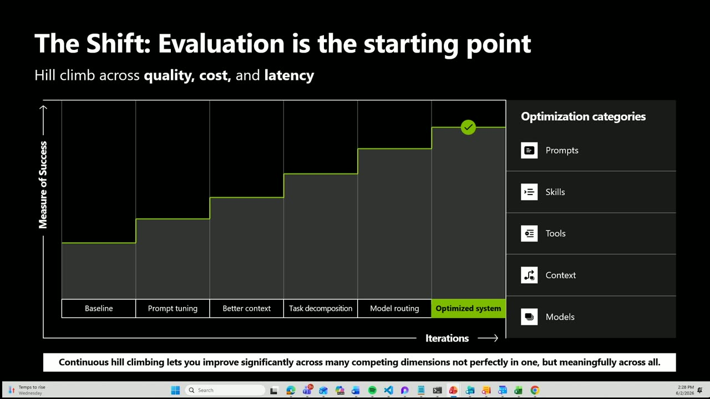
{kind=link}
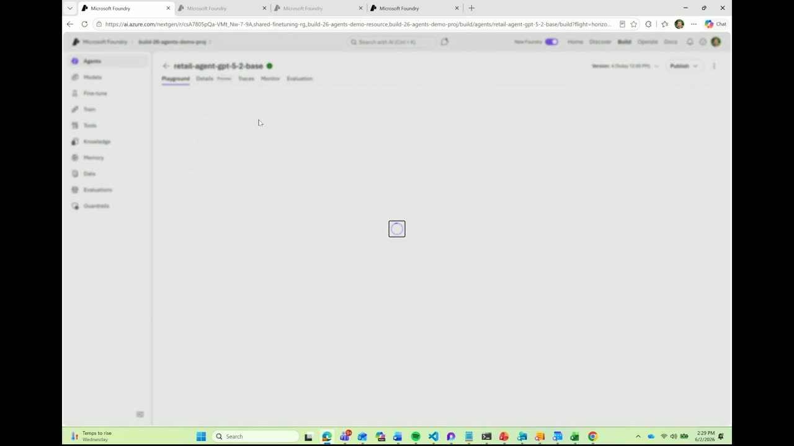
{kind=link}
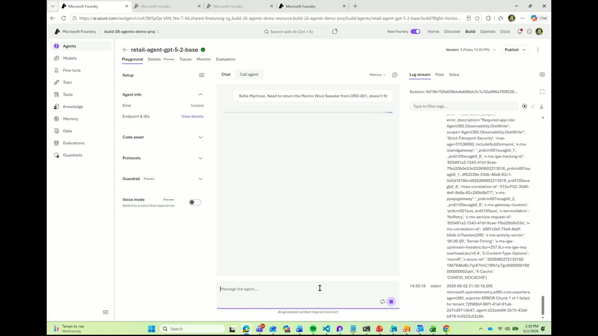
{kind=link}
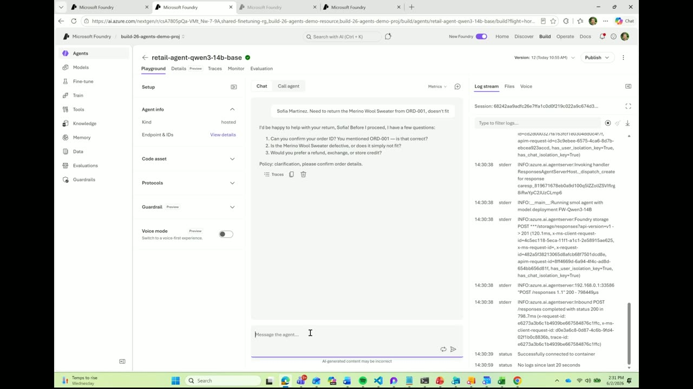
{kind=link}
{kind=link}
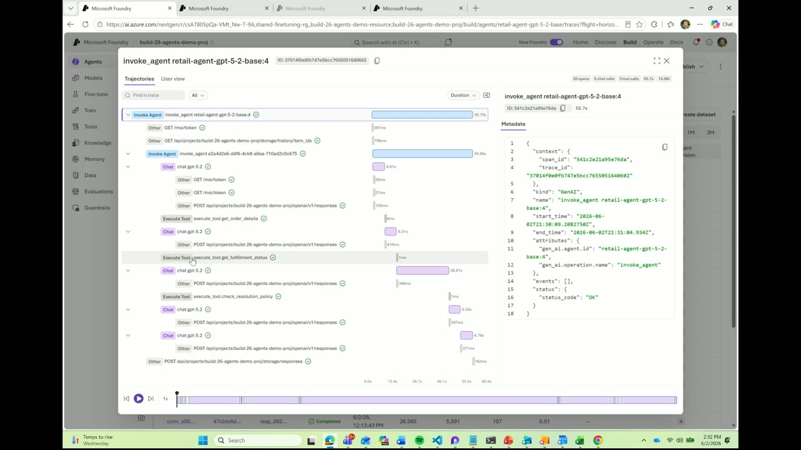
{kind=link}
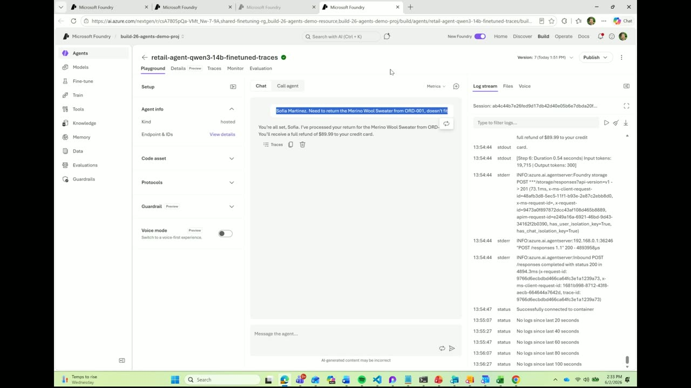
{kind=link}
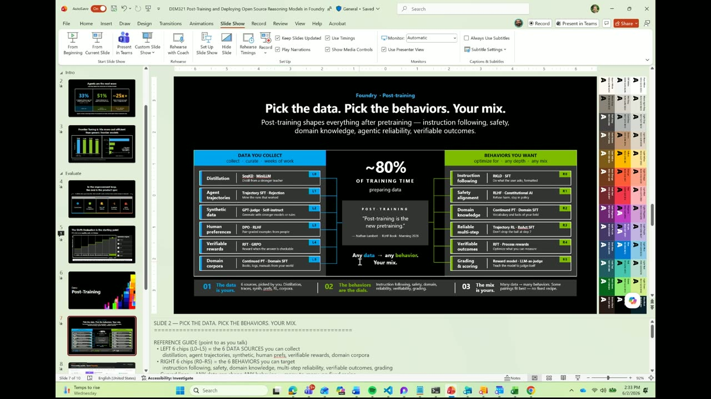
{kind=link}
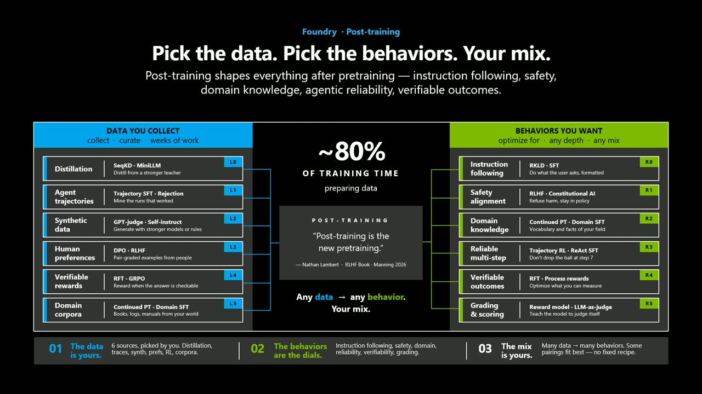
{kind=link}
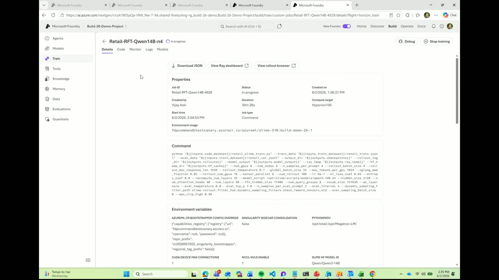
{kind=link}
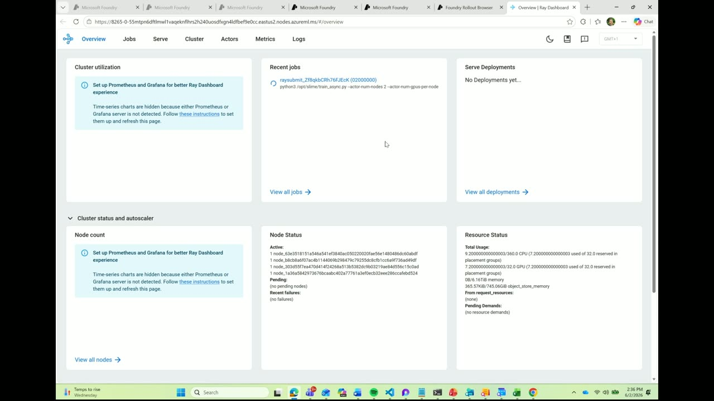
{kind=link}
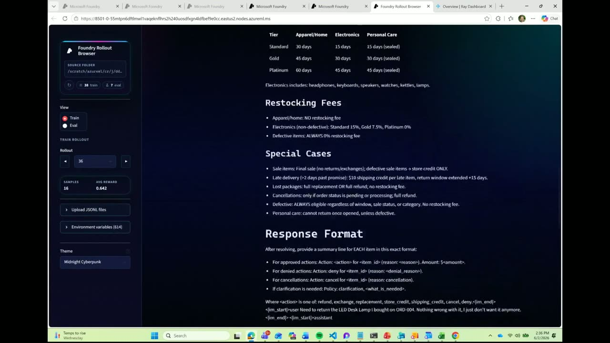
References
Transcript
Show / hide transcript (13,133 chars)
[00:00:05] Thank you all so much for your patience. [00:00:08] Who knew plugging a laptop in was so difficult? [00:00:13] Now, as you all know, agents are all the rage [00:00:16] and we're going to try and speed this up a [00:00:18] little bit and we'll see what of the demo we [00:00:21] can actually cover. [00:00:22] But one of the key things that I want to [00:00:24] highlight, you know, everyone's talking about agents, everyone's trying to [00:00:28] deploy them in production, and some are getting there, and [00:00:30] that's fantastic. [00:00:32] But one of the key differences between agents and chat [00:00:35] scenarios is the sheer volume of tokens they consume. [00:00:39] They're doing a lot more of the thinking and the [00:00:43] acting on behalf of us all as we offload these [00:00:46] capabilities to the cloud. [00:00:48] And as a result, not only are they extremely capable, [00:00:51] but the costs are increasing as you scale the agents [00:00:55] in production. [00:00:56] So one of the things that we're going to teach [00:00:59] you today is how to use Foundry to facilitate fine [00:01:03] tuning these open source models that are smaller, that are [00:01:07] extremely capable once they learn your business domain, once they [00:01:12] learn what you define as being good. [00:01:15] And they can do this at a small fraction of [00:01:17] the cost of the Frontier models. [00:01:20] Everyone's tendency is to grab the latest model as it [00:01:23] gets released by a large Frontier lab and put it [00:01:26] in their agents and use prompts. [00:01:29] Tuning to. [00:01:30] Facilitate actually achieving your scenario and that works. [00:01:35] These frontier models are incredibly capable, however often times the [00:01:40] order of the tool calling in an agent matters. [00:01:44] The policy adherence matters and the rate at which those [00:01:49] tools are called can substantially increase the overall latency as [00:01:54] well. [00:01:56] And so one of the ways that we want to [00:01:59] shift your mindset and help you think about scaling your [00:02:03] agents in a secure, scalable, and trustworthy way is by [00:02:07] defining your evals first. [00:02:09] Is almost like test driven development for the age of [00:02:13] agents. [00:02:14] By defining your evals, you can specify what is good, [00:02:17] what your policies are, how the agent should behave, which [00:02:21] tools should be called when, and all of this can [00:02:24] be done in a consistent and repeatable way regardless of [00:02:28] which models you're using in the. [00:02:30] Agent. [00:02:31] So you can define your quality bar and then as [00:02:34] you're swapping out, trying different models, whether it's the latest [00:02:39] frontier model or a small open source model, your evals [00:02:42] are the thing that help you determine whether your quality [00:02:46] is sufficient to be able to ship to production. [00:02:50] And that's the key thing is like evals are not [00:02:52] something that you should be doing at the end of [00:02:55] the process. [00:02:56] You should be defining them upfront and then iterating on [00:02:59] them while you're iterating on your model and iterating on [00:03:03] on your agent. [00:03:04] And so with that, we're happy to announce that now [00:03:08] Foundry not only enables creating agents and deploying agents, but [00:03:13] also enables customizing those agents using any open source framework [00:03:18] on any open source model to achieve the level of [00:03:22] quality that you need to ship to production. [00:03:26] Now I'm going to show you a bit on how [00:03:28] we can leverage Foundry to to achieve that. [00:03:32] Now here in I've got Foundry and I apologize, I [00:03:36] didn't warm this up because we were clearly planning on [00:03:40] using the the other laptop, but we've got a a [00:03:44] chat bot scenario and I'll show you with a couple [00:03:48] of custom models here. [00:03:49] Now we've got the, the GPT 5.2 Frontier model, extremely [00:03:54] capable model. [00:03:56] And here I've got a customer service retail agent which [00:04:01] is going to interact with the customer and operate against [00:04:06] my data, my policy, my business domain. [00:04:09] GPT 5.2 inherently doesn't know anything about it, but it's [00:04:13] extremely smart. [00:04:15] And given that I've added four specific tools to this [00:04:18] agent, it's going to reason over how to interact with [00:04:22] these tools to connect with my my data source behind [00:04:25] the scenes and be able to actually validate how it [00:04:29] should interact. [00:04:30] Now, while that's running, I'm going to go ahead and [00:04:34] use an open source model as well, Quen 314B. [00:04:37] Now this model can operate at 110th the cost of [00:04:42] GPT 5.2. [00:04:43] It's a small, very efficient model. [00:04:45] It's a very capable model, and again, it's able to [00:04:49] make some pretty good guesses as to how to work [00:04:52] with the tools in this particular agent. [00:04:55] However, as a as an end user, a customer interacting [00:04:59] with the agent, I don't really want a bunch of [00:05:02] questions back at me. [00:05:04] I just want resolution to my scenario. [00:05:07] And so by fine tuning this open source model using [00:05:11] reinforcement learning techniques, you can choose to train the model [00:05:16] to not only understand your business domain, but also understand [00:05:20] how to use the different tools in what order to [00:05:24] achieve the maximum benefit for the customer, your company and [00:05:29] do so at the lowest cost possible. [00:05:32] But how do you even get a data set to [00:05:34] be able to facilitate doing the reinforcement learning? [00:05:38] One of the things that we've launched in Foundry recently [00:05:42] is the ability to not only dig into how these [00:05:45] models and agents work together, to look at the specific [00:05:50] traces. [00:05:51] So every single session, every single interaction with your users [00:05:54] is automatically captured. [00:05:56] And that observability, including not only the reproducibility to understand, [00:06:01] oh, let me learn how it behaved, but the cost, [00:06:04] all is automatically captured. [00:06:06] We can dig into the specific traces of any specific [00:06:09] session automatically. [00:06:11] And we can see here that it's not only invokes [00:06:14] the model a couple of times, but it's also invoked [00:06:17] the tools that enable the agent to perform well, to [00:06:20] do the order look up, to validate against my policy. [00:06:23] And ultimately these models can then interact with all those [00:06:27] to get the right outcome for the customer. [00:06:30] But we can also take all of these traces from [00:06:33] the models and the agents running in production and automatically [00:06:37] convert them to a data set that we can use [00:06:40] for a subsequent reinforcement learning to improve the behavior over [00:06:45] time. [00:06:45] So we can select all of the the sessions that [00:06:48] have been executed against any of the versions of the [00:06:52] models, generate this training data set, which you can then [00:06:56] use for subsequent reinforcement learning. [00:06:59] And once you do that, then you can get the [00:07:02] ideal models responses for your business. [00:07:05] You can train at which of the traces are are [00:07:08] useful, train, use that data set and invoke subsequent reinforcement [00:07:12] learning training runs. [00:07:13] So this is where we're, we're headed. [00:07:16] And Vijay, do you want to walk us through the, [00:07:18] the slides at least? [00:07:19] Unfortunately we can't do the demo in the demo session [00:07:22] on how we're going to get there. [00:07:27] So thank you, Chris. [00:07:29] Can you guys hear me? [00:07:31] OK. [00:07:32] So everybody has heard of model customization fine tuning. [00:07:36] You also heard of reinforcement fine tuning, I guess. [00:07:39] So what is post training? [00:07:42] Everybody knows what each either of the terms are. [00:07:45] But post training basically is a broad umbrella term where [00:07:49] you take any data that you need. [00:07:51] That data could be custom data that you have, agent [00:07:55] traces that you have, or data that is distilled from [00:07:58] larger models or something that is synthetically generated. [00:08:01] So you basically spend significant amount of time prepping your [00:08:05] data, potentially up to 80% of the time you prep [00:08:08] the data and then you basically change your model behaviour [00:08:12] using various techniques. [00:08:14] And the techniques that we talk about are things like [00:08:17] SFT and RFT broadly, but there are other techniques, but [00:08:20] in this case, in this example, we are only sticking [00:08:24] with these two techniques. [00:08:25] So basically you do distillation using traces and then you [00:08:28] do SFT and then you RFT. [00:08:30] The reason why you do SFT and the reason why [00:08:33] you do customization. [00:08:34] Like I said, it's all about token efficiency, your performance [00:08:38] and your accuracy of your tool calls. [00:08:40] So the agents actually are effective and you get the [00:08:42] ROA for the investment that you have. [00:08:44] So let's go back to the I kicked off some [00:08:47] jobs. [00:09:04] So there are some jobs that I kicked off before [00:09:07] the demo. [00:09:08] Let's say there's SFT job, there's a supervised fine tuning [00:09:11] job, and there is RFT job. [00:09:13] So RFT here. [00:09:14] The difference between SFT and RFTSFT is basically teaching the [00:09:18] model how to imitate what you give. [00:09:21] RFT is the one that's saying here are the verifiable [00:09:24] steps. [00:09:25] As long as you make sure that every single one [00:09:27] of the steps that you follow and you get the [00:09:30] task done, that's what you need to do, that's what [00:09:33] you reward. [00:09:34] So it's basically zero or one or something in between. [00:09:37] The closer you are to one, that's when you're saying [00:09:39] that the model is closer. [00:09:41] So it's basically it's more verifiable. [00:09:44] So when you kick off the job, you have let's [00:09:47] say native integration with Ray dashboards and we have your [00:09:51] rollout browser. [00:09:54] So when you have a Ray cluster, so you can [00:09:57] basically in Foundry, you can manage everything else. [00:10:00] Let's say this is custom code. [00:10:02] You bring in your code, you do your GRPO, you [00:10:04] bring your model. [00:10:05] And when you're doing a ray cluster, you can manage [00:10:07] the entire ray cluster. [00:10:08] Here it's an AAD authenticated endpoint where you can basically [00:10:13] look at all your CPU nodes, GPU nodes, everything in [00:10:17] between, and then monitor the job and then the rollouts [00:10:21] specifically. [00:10:24] Yeah, yeah, like in a minute. [00:10:27] Yeah. [00:10:29] OK, so sounds good. [00:10:31] So this is a trajectories in RFT. [00:10:34] So you can basically see for every sample that the [00:10:36] model is going through all the samples, all the tool [00:10:38] calls and everything else is doing. [00:10:40] You basically are rewarding these tool calls specifically, which basically [00:10:45] says, hey, we sure doing this specific method, it's OK [00:10:48] if you're doing this, you're punitive, so on so forth. [00:10:52] So basically you can watch the reinforcement fine tuning in [00:10:56] action till you get to the reward thing. [00:10:58] And the last thing here is if you see a. [00:11:07] So the last thing here is we just want to [00:11:12] show that when you do that, you can basically have [00:11:17] have a better results with SFT and RFT. [00:11:20] Thank you folks. [00:11:21] Thank you for the and all the patience and the [00:11:23] delay here. [00:11:24] Thank you. [00:11:26] Thank you so much. [00:11:27] Yeah, yeah.